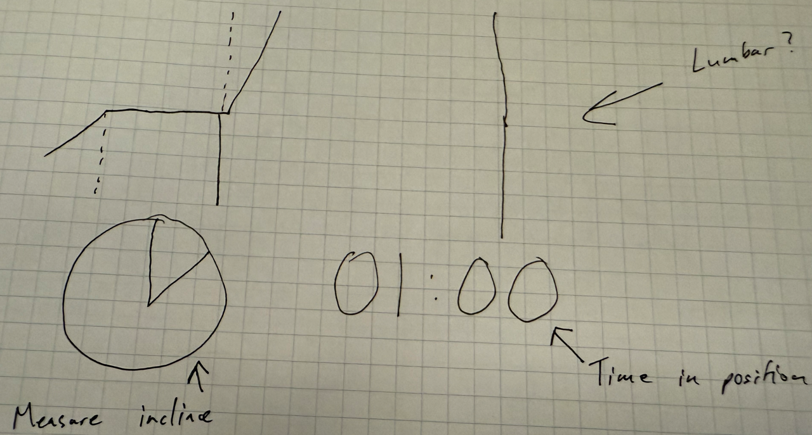
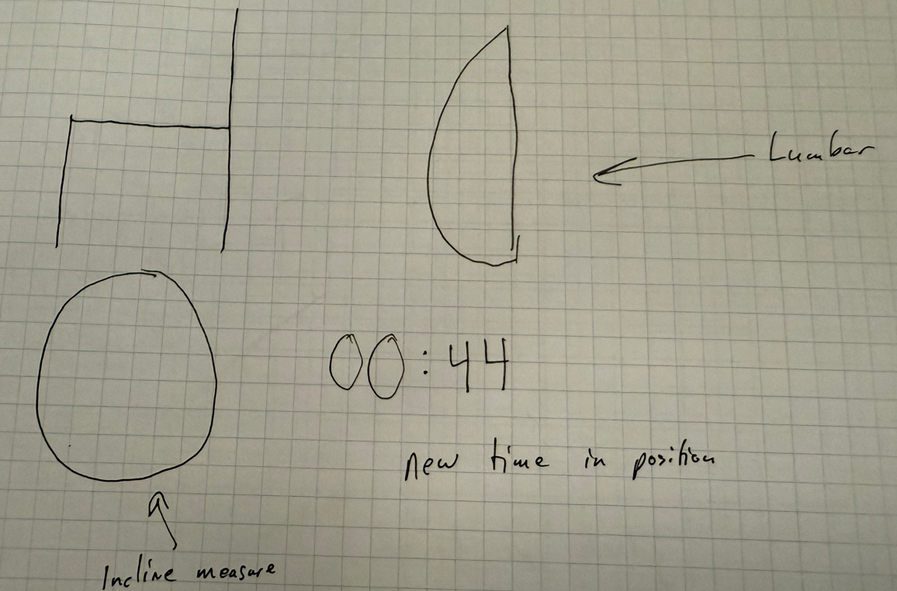
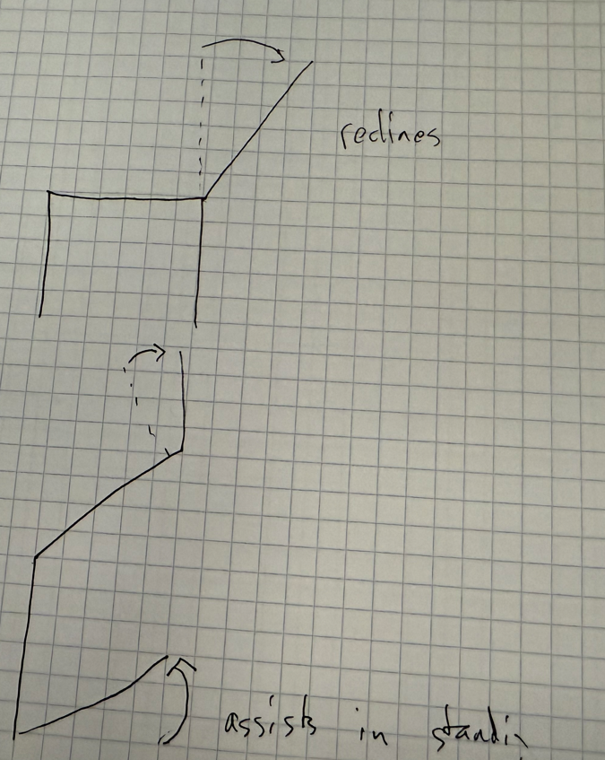
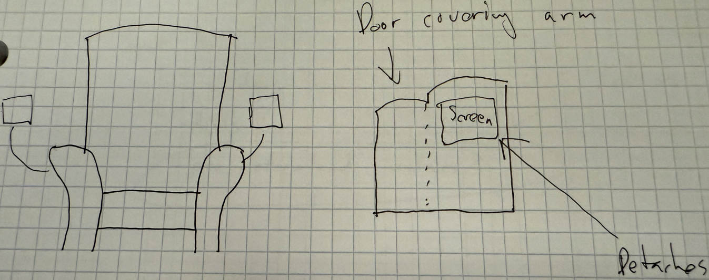
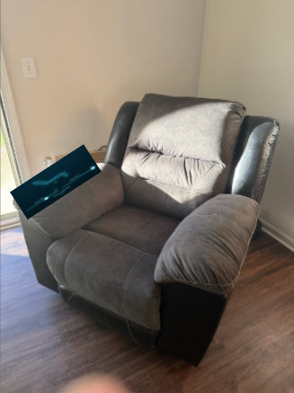
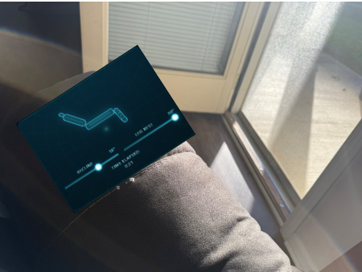
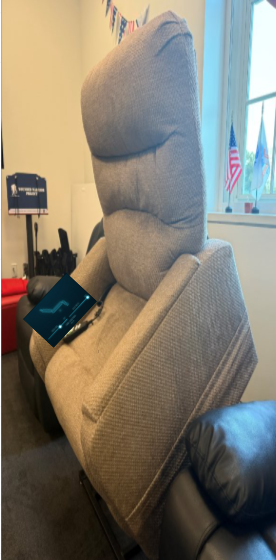

SmartChair is an innovative seating solution designed to promote better posture and comfort. It is to be of standard height from a
measurement from the ground to the top of the seat-bottom position, parallel with the ground and perpendicular to the seat-back.
This will be the neutral/initial position of the chair. The seat back will be adjustable by angles given to the user along with the
leg rest that will be able to be adjusted as well. Both seat-back and leg rest will be adjustable at the same time. There will be
sensors in the seat bottom that detect the pressure of the user from thirty-six locations to make suggestions on how to adjust the user’s posture.
The sensors will be able to take into consideration whether or not the user has a wallet in their back pocket and make helpful suggestions to
adjust the seat to assist with back pain. All suggestions will be implemented with user approval; they will not make any adjustments without consent.
The user interface is portable, about the size of an iPad Air.
It will be mounted to an arm that holds it to either the left or right of the arm on the chair.
If the user so chooses, they can also use their mobile device to make adjustments on the chair.
Design
Interviews
One person interviewed with chronic back pain, uses a cane, two total knee replacements, elderly, and they are looking for an ease-of-use chair that won’t take a lot of effort to learn. Comfort was a large request, but not too much comfort so that they won’t want to get out of the chair. They mentioned that they saw a chair at a furniture store that will assist with getting out of the chair and that it would be a feature they would like to be incorporated.
Another person interviewed with chronic back pain, uses a walker, one total knee replacement, elderly said they wanted something that would help them try to stop slouching in their chair. They wanted a recliner, but the recliner should help them sit up straight rather than be in a reclined position all the time. Interest was expressed when asking about alerts sent to their phone, rather than having everything on a screen attached to the chair.
Another person interviewed with sciatica and upper back pain and is middle-aged said they wanted something that would remind them to correct their posture and stand up occasionally, so they aren’t sitting the entire time. Rather than having a recliner, perhaps make it a computer/office desk chair so they can use it during work and not just when they get home.
Another person interviewed with no medical issues and in their single-digit youth said they want a chair that will help them go to sleep in the living room if a movie their parents are watching is boring. They don’t want to go to bed yet.
From the interviews, we gathered that the needs of the chair and its interface are that it is easy to use, has posture correction, and a timer to keep track of how long the chair has been used. These factors were taken into consideration when creating the final design.
Sketches







Element Descriptions
Chair Visual
The chair shows a 2D representation of the SmartChair with adjustable parts moving in realtime to show the position of the chair.
Adjustment Sliders
The adjustment sliders allow users to customize the chair's settings, such as recline and leg support, to achieve their desired comfort level.
Posture Feedback
Implementation Details
The SmartChair interface is built using Svelte, a modern JavaScript framework that allows for efficient and reactive user interfaces. The chair visual is created using SVG graphics, enabling smooth animations and real-time updates as users adjust the chair settings. The adjustment sliders are implemented using Svelte's built-in components, providing a seamless user experience. Posture feedback is generated based on sensor data, which is processed and displayed to the user in an intuitive manner.
The sensor visual was designed with D3, and the 3D height map was built with Babylon.js.
Future Work
Implementing an interface where they can see the sensor data and adjust their posture based on that data. Currently the chair adjusts for them without showing the visual.
Future work will include lumbar support and adjustment in the same manner as the seat bottom is done.
In the future, we can also add a feature to remind the user to stand if they have been sitting for a long period of time.
Have a game on the pad to show interaction with the product (tightrope game or a sledding game that goes straight, and your posture is leaning the sled toward the edge of the course … or something like that)
Include a doctor’s interface that can let them know that posture is improving. The doctor will then be able to interact with the patient much quicker thanks to how Epic medical records work. Integration into other apps would be useful if there are multiple physicians using different programs to see progress. This can also speed up the appointment because the doctor can have what they want to talk about prior to the patient’s arrival and can begin talking about a plan to assist in recovery or therapy.
Implementation of AI to help with predictions on posture correction and suggestions based on user history and preferences.
Individually adjustable (auto-levelling) legs for uneven floors.
Different versions of the chair so it can be in multiple places at once.
Implementation of a scoring system to rank how posture is improving and motivating the user to keep using the product.
If there are multiple family members that are using the product, have them get an option to share their scores so they can compete against each other, thus encouraging more use.